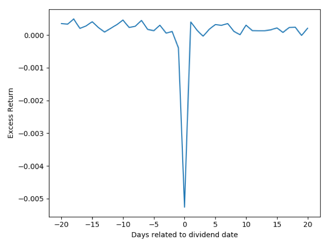

In this project, for the (CRSP) S&P500 stocks, I calculate the stock return without dividends (minus the S&P500 on the same day) from days -20 through day +20, each day by day. Line up all stock excess returns on the event dates, and calculate the mean across all stock-days.
Here goes the result plot: 
From the picture above, we can see that stock returns without dividends drop down significantly on dividends payment dates. In conclusion, the returns without dividends on the divident payment date are much lower than the non-dividend date return on average.
import pandas as pd
import numpy as np
import matplotlib.pyplot as plt
df = pd.read_csv("~/Desktop/CorporateFinance404/hw2/sp500_without_d.csv")
df = df.replace('C',0)
dividend_date = df.dropna().index.values
non_dividend = list()
return_mean = list()
for i in range(-20,21):
x = [j + i for j in dividend_date]
non_dividend.append(x)
for i in non_dividend:
temp = df.iloc[i,5].astype("float").subtract(df.iloc[i,6])
return_mean.append(np.mean(temp))
plt.plot([i for i in range(-20,21)],return_mean)
plt.ylabel("Excess Return")
plt.xlabel("Days related to dividend date")
plt.show()
TAs, please do not judge me too harshly.